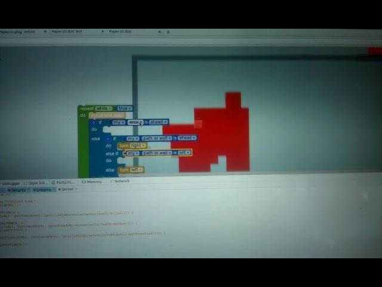

Du kannst deinen Spieler für Paper-IO.com selber programmieren.
 Du kannst die Playlist auf Youtube ansehen. Schick mir gern eigene Videos und ich packe sie mit rein.
Wenn Du magst, kannst du auch erstmal die Testseite ansehen.